Scorecard
Rubric v0.2 · re-scored 2026-10-31 ET (first scored 2026-10-30)
Hunyuan3D-2: 1 of 6 score 100 on rubric v0.2 (5 of 6 on v0.1)
- 5/6 watertight single bodies; T05 still fails watertight (26.9/100, hard-fail). 6/6 sliced, now worth 5 points, not 20.
- v0.2 slices with real tree supports in the glTF Y-up pose: the fox needs 24.3% of its plastic as support, the planter 30%. The nut stands on its edge as delivered (38.8 mm² bed contact). Rubric change log.
- Space GLB exports include many index-degenerate zero-area padding triangles. The scorer drops those as export padding before watertight checks (not counted as holes).
- Raw output, no repair: locked prompts T01–T06 → FLUX.1-schnell reference (seed 1234) → Hunyuan3D-2 public Space (seed 1234, 30 steps).
- Second open-source generator, Hunyuan3D-2.1, scored below on the same prompts (2026-10-31). Meshy, Tripo, Hitem3D, Rodin and TRELLIS are queued.
| Preview | Prompt | Generator | Score v0.2 | v0.1 | Watertight | Tree support | Bed contact mm² | Hull fill | Wall p5 mm | Est. time (n/a pts) |
|---|---|---|---|---|---|---|---|---|---|---|
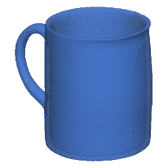 |
T01 · Coffee mug with handle | Hunyuan3D-2 | 98.2 | 100 | yes | 8.9% | 317.8 | 19.2% | 1.283 | 1h 52m |
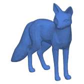 |
T02 · Low-poly fox figurine | Hunyuan3D-2 | 86.9 | 100 | yes | 24.3% | 21.6 | 35.6% | 2.199 | 1h 16m |
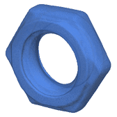 |
T03 · M8 hex nut with threads | Hunyuan3D-2 | 89.8 | 100 | yes | 23.3% | 38.8 | 61.8% | 4.813 | 1h 57m |
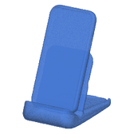 |
T04 · Phone stand with slot | Hunyuan3D-2 | 100 | 100 | yes | 3.5% | 612.3 | 31.7% | 1.823 | 1h 28m |
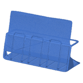 |
T05 · 3-slot business card holder | Hunyuan3D-2 | 26.9 | 39 | no | 53.8% | 49 | — | — | 1h 4m |
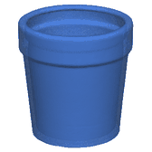 |
T06 · Planter pot with drainage hole | Hunyuan3D-2 | 91.7 | 100 | yes | 30% | 133 | 21.9% | 1.848 | 3h 43m |
Rubric v0.2 · scored 2026-10-31 ET · second generator
Hunyuan3D-2.1: 6 of 6 watertight, but 4 of 6 came with a built-in ground plate
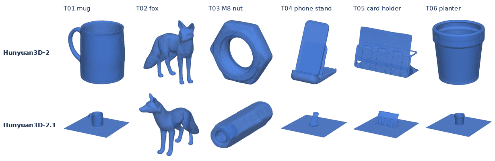
- Scores: T01 81.7, T02 83.2, T03 96.7, T04 81.6, T05 73.8, T06 82.3. 6/6 watertight single bodies, 0 hard fails, 6/6 sliced.
- The catch: on T01, T04, T05 and T06 the mesh includes a thin square plate (about 0.3 mm thick at 50 mm scale) under the object. It fills the bed (about 2,480 mm² contact), fails the 0.4 mm wall check and drops hull fill to 6.5–8.4%. Scaled to 50 mm, the plate is the long edge, so the object on it is small. You would cut the plate off before printing.
- T03 came out as a long hex prism lying on its side, not a flat nut; it still scores highest here (96.7), because the rubric checks printability, not whether the shape matches the prompt.
- Raw output, no repair: same reference images → tencent/Hunyuan3D-2.1 public Space, shape model hunyuan3d-dit-v2-1 (seed 1234, 30 steps, guidance 5.0, octree 256), shape only.
- Both scored models are open-source models from the same vendor (Tencent). This is not a buying guide yet; Meshy, Tripo, Hitem3D, Rodin and TRELLIS are queued for the same prompts.
| Preview | Prompt | Generator | Score v0.2 | v0.1 | Watertight | Tree support | Bed contact mm² | Hull fill | Wall p5 mm | Est. time (n/a pts) |
|---|---|---|---|---|---|---|---|---|---|---|
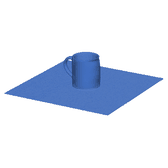 |
T01 · Coffee mug with handle | Hunyuan3D-2.1 | 81.7 | — | yes | 5.1% | 2485.4 | 7.6% | 0.293 | 25m |
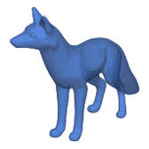 |
T02 · Low-poly fox figurine | Hunyuan3D-2.1 | 83.2 | — | yes | 29.3% | 13.4 | 34.3% | 1.942 | 50m |
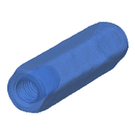 |
T03 · M8 hex nut with threads | Hunyuan3D-2.1 | 96.7 | — | yes | 9.9% | 67.8 | 89.5% | 2.437 | 50m |
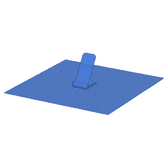 |
T04 · Phone stand with slot | Hunyuan3D-2.1 | 81.6 | — | yes | 0% | 2488 | 7.4% | 0.289 | 23m |
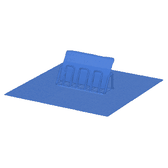 |
T05 · 3-slot business card holder | Hunyuan3D-2.1 | 73.8 | — | yes | 26.6% | 2482.4 | 6.5% | 0.3 | 30m |
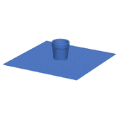 |
T06 · Planter pot with drainage hole | Hunyuan3D-2.1 | 82.3 | — | yes | 0% | 2482.5 | 8.4% | 0.29 | 23m |
Scorer validation (test meshes)
| Preview | Mesh | Type | Score v0.2 | v0.1 | Watertight | NM edges | Slice | Est. time |
|---|---|---|---|---|---|---|---|---|
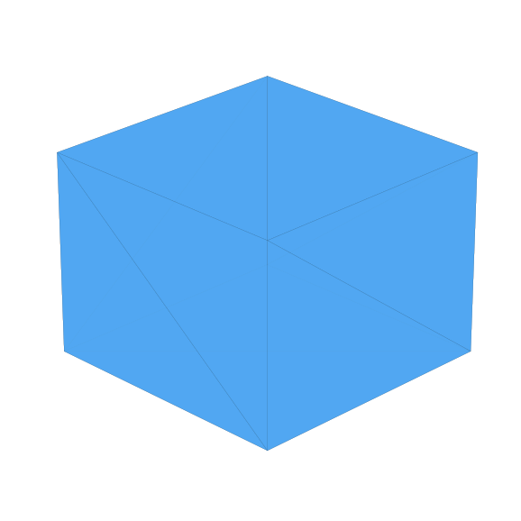 |
n01_closed_cube | control | 100 | 100 | yes | 0 | ok | 5h 21m |
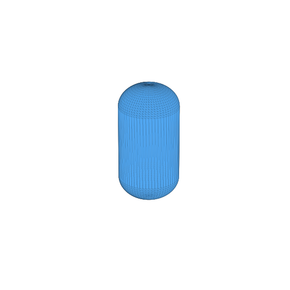 |
pd_capsule | control | 90.2 | 100 | yes | 0 | ok | 51m |
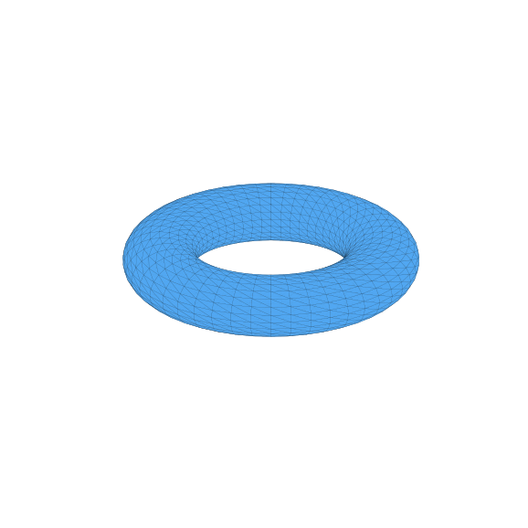 |
pd_torus | control | 88.2 | 100 | yes | 0 | ok | 1h 17m |
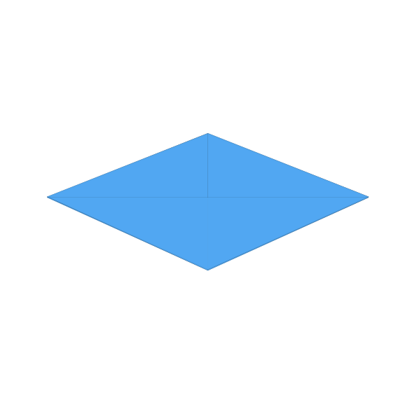 |
n05_thin_plate | thin wall | 90 | 90 | yes | 0 | ok | 12m |
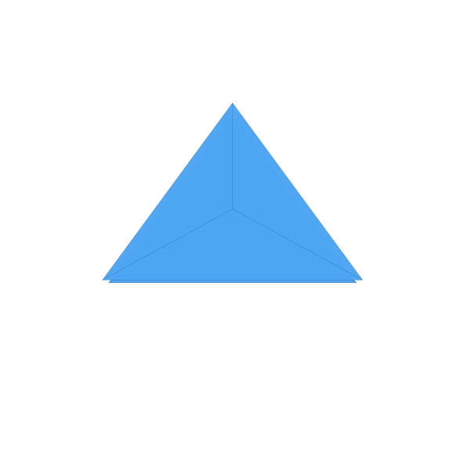 |
n04_intersecting_tets | self-intersect | 80 | 90 | yes* | 0 | ok | 1h 57m |
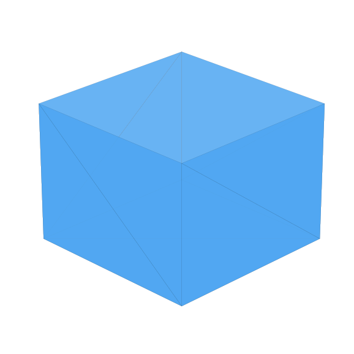 |
n02_open_cube | broken | 35 | 39 | no | 4 | ok† | 5h 21m |
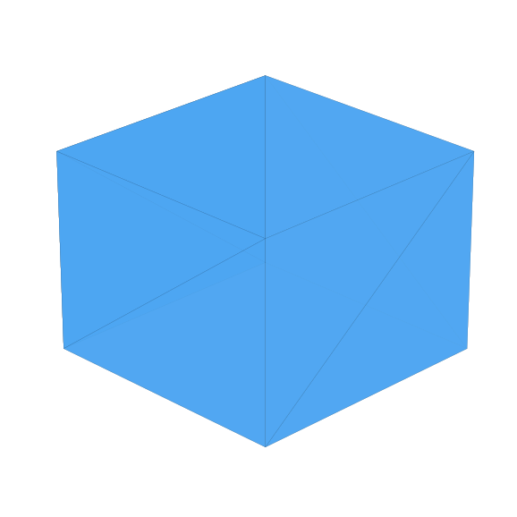 |
n03_internal_wall | non-manifold | 30 | 39 | no | 5 | ok† | 5h 21m |
* Two watertight bodies that overlap — self-intersection penalty applied (v0.2 also: they touch the bed at a point, so 0 bed-contact points).
† Slicer can still emit G-code for some broken meshes; hard-fail cap still applies when not watertight.
‡ Watertight is measured after dropping index-degenerate export-padding faces common in Space GLB exports.
Also scored (not shown with thumbs): pd_cylinder 100, pd_icosphere 89.1 on v0.2 (both 100 on v0.1). Round controls lose bed-contact points in v0.2 because a sphere or torus has no flat base.
Hunyuan3D-2 and Hunyuan3D-2.1 rows: meshes normalized to 50 mm longest edge, rotated from glTF Y-up to Z-up, auto-orient off; OrcaSlicer 2.4.2, Bambu Lab A1 0.4 mm, 0.20 mm Standard + tree(auto) supports at 45°, Generic PLA. Tree support = support extrusion ÷ all extrusion. v0.1 history: scores_v0.1.csv.
Queued: Meshy, Tripo, Hitem3D, Rodin, TRELLIS
Same locked prompts, same slicer profile, raw output scored before any repair. Get Friday scores by email, or follow with no account.
Confirmation email required (double opt-in). Free; unsubscribe anytime. Sent via Kit. Privacy.